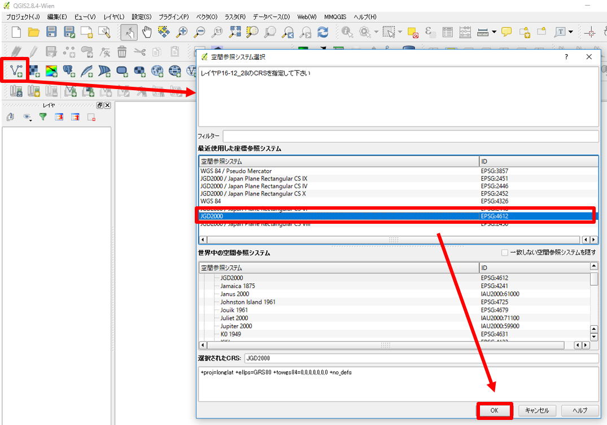
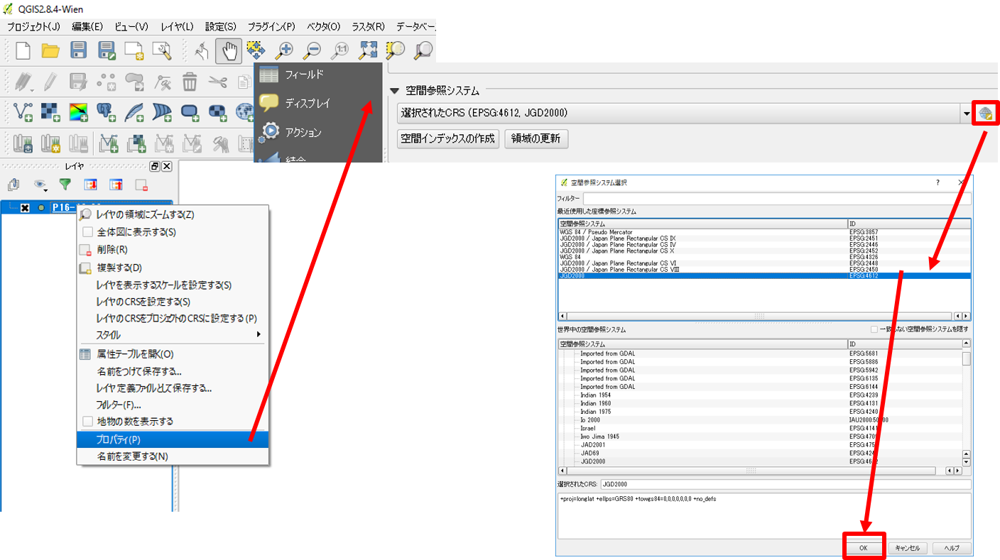
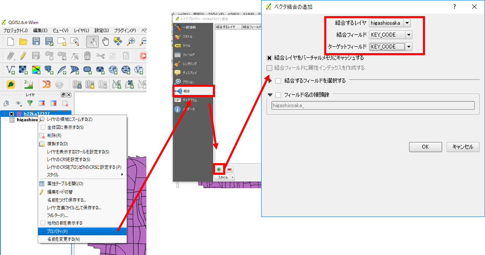
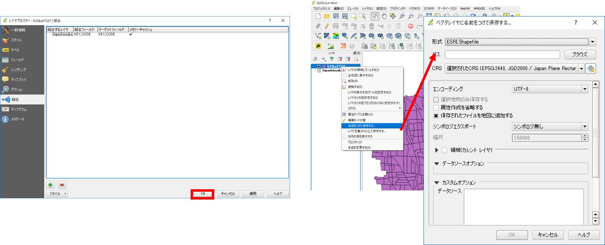
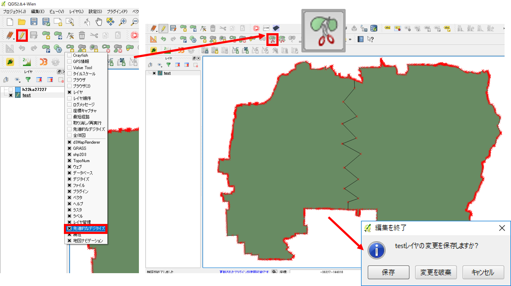
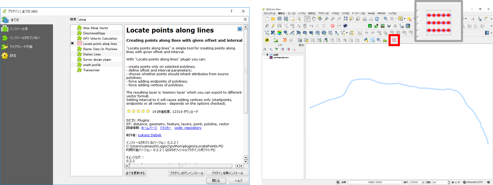
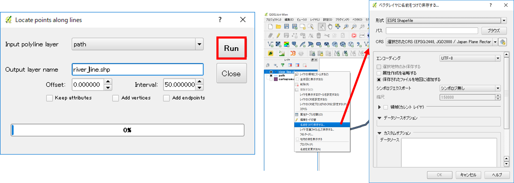
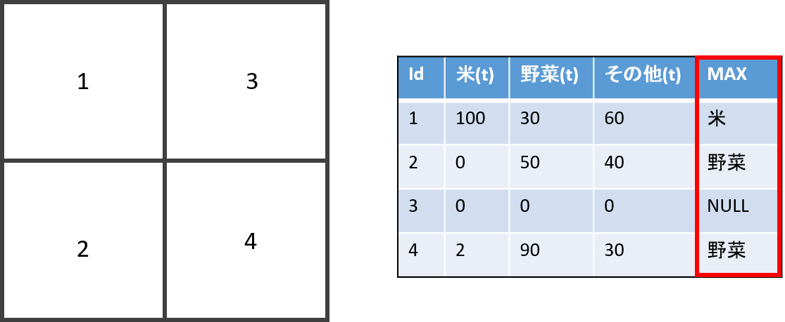
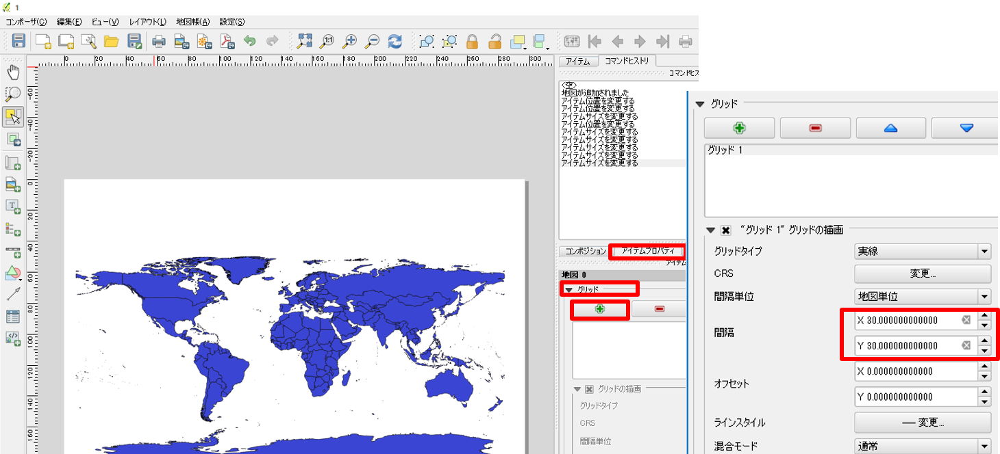

よくある質問とエラー
以下は、QGIS(2.8)の利用時や実習におけるよくある質問とエラーについてまとめたものです。
「よくある質問とエラー」ページの充実のためのアンケート
本プロジェクトでは、教材の改良を目的とした任意アンケートを実施しています。「よくある質問とエラー」ページに追加してほしい項目や、本ページに対する意見・提案等を、アンケートに記入してください。※ 本アンケートの成果は、教材の改良のほか、学会での発表等の研究目的でも利用します。また、本アンケートでは、個人が特定できるような質問は設けておりません。
QGISに関する質問やエラー集
本教材の他に、QGISに関する質問やエラー集をまとめているサイトとして以下があります。
- QGIS初心者質問グループ :QGISユーザー有志によって運営されているサイトです。QGISに関する質問と回答集が蓄積されている有用なページです。誰でも自由に質問することが可能です（質問投稿の際には、「※注意」を確認する）。
QGISの基本操作
データ読み込みについて
- .ZIPのファイルは解凍作業が必要
- シェープファイルは複数のファイルの総称をいう(読み込みの際は.shpファイルを選択する)
- 文字コードは、日本語の場合shift-JISかutf-8を選択（文字化けする場合は、「QGISのレイヤ>プロパティ>一般情報>データソースエンコーディング」より変更）
新規ベクトルレイヤと属性テーブルの追加
- QGISで新規にラインやポリゴンを作成する場合は、作成後に右クリックが必要
データ型に注意し、新規レイヤや属性テーブルの追加を行う。
「名称」はカラム名、「タイプ」はデータ型にあわせる、「幅」と「精度」は入力するデータによる。 「タイプ」・・・値が整数ならInteger、小数を含むならReal、テキストならStringとなる。 「幅」＞桁数、「精度」＞表示する小数の位
シンボル（ポイントやラインの形状）変更、ラベルの追加
- ラベルは、プロパティ>ラベル から、ラベルにチェックをいれ、ラベルを表示したい属性テーブルを選択し、OKをクリックする
地理座標系と投影座標系
| 座標系 | 単位 |
|---|---|
| 地理座標系 | 緯度経度 |
| 投影座標系 | メートル等 |
※ 座標系についてはesriジャパンの GIS 基礎解説が詳しい。
ジオリファレンス
ジオリファレンスの注意点：QGISの場合
- GCPの位置が偏りすぎないようにする（まず、四隅をおさえる）
- 5箇所程度GCPが取得で来たら、ジオリファレンスの開始をクリックする
- QGISの操作画面に画像を反映させてから、細かい修正をするとよい
- GCPテーブルのresidual（誤差）の値を確認し、大きすぎる値を消去するとよい
- GCPを保存しておくと、次回も利用できる
- GCPを付けた画像は、「名前を付けて保存」からGeoTIFF形式で保存する
プラグイン
タイルレイヤプラグインの注意点
- QGIS>Webからタイルレイヤプラグインを起動し、設定から任意の場所に置いた.tsvファイルがあるフォルダを選択する。
- 背景画像の表示は、座標系とズームレベル（拡大レベル）に注意する
- 使わないタイルは、消しておくと表示がスムーズになる
測地座標系の変換
国土数値情報の変換
国土数値情報のデータは、世界測地系の緯度経度で提供されているため、平面直角座標系で利用する場合は、変換が必要になる。以下にその手順を示す。なお、本教材では、QGIS2.8がJGD2011に対応していない場合があるため、JGD2011のデータもJGD2000をとして扱っている。
まず、ダウンロードしたデータをQGISで読み込む。 読み込んだ際に、下の図のようなうウィンドウがでたら、JGD2000を選択し、OKをクリックする。 
ウィンドウが出ない場合は、レイヤウィンドウ上で読み込んだレイヤを右クリックし、一般情報の空間参照システムをJGD2000にし、OKをクリックする。 
以上のように、測地座標系の初期設定が完了させた上で、空間座標の変換を行う。空間座標の変換は、[空間データ]の教材を参照すること。 また、よくある間違いとして、空間座標の変換をプロパティ＞一般情報から行うという例がある。QGISでは、プロパティから空間座標の変換はできないため、必ず名前を付けて保存から変換すること。
※日本のデータを利用して、平面直角座標系を使用する場合は、国土地理院の平面直角座標系のページを参照するとよい。
QGIS2.8のテーブル結合
テーブル結合は、同じフィールドをもつテキストデータと空間データを結合する処理です。例えば、市町村の境界データと同地域の人口データを結合する場合、両データで一致する市町村名等の属性を用いて、データを結合します。以下では、QGIS2.8でテーブル結合をする手法について解説します。QGIS3.4でのテーブル結合は、視覚的伝達の教材で紹介。
空間データとテキストデータを読み込み、空間データのプロパティを開く。プロパティ＞結合をクリックする。結合タブの＋ボタンをリックし、結合するレイヤ（テキストデータ）と両者のデータの一致する属性が入っているフィールドを選択する（町丁目等で結合することもできる）。 
ＯＫをクリックした後、結合ができているかを確認するため、属性テーブルを開く。結合が正しくできている場合は、名前を付けて保存から、新規データとして書き出す。 
ポリゴンの分割
以下では、QGIS2.8でポリゴンを分割する手法について解説しています。
ポリゴンを分割したいデータを読み込む。ボタンが並んでいるグレーの個所で右クリックし、先進的なデジタイズのツールを表示する。編集モードをオンにし、下の図のアイコンをクリックする。ポリゴンを分割するには、分割したい地点の外側をクリックしてから、分割したい図形を作成する。図形の作成を終えるには、レイヤの外側をクリックした後、右クリックすると反映される。最後に、編集を保存し、ポリゴンの分割を完了させる。

ラインに沿ってポイント作成
以下では、QGIS2.8を用いて、ラインに沿って、一定の間隔でポイントを作成する手法について解説しています。
プラグインの管理とインストールから、Locate points along linesプラグインをインストールする。インストールが完了したら、下図のようなアイコンが表示されるので、それをクリックする。
※以下では、50ｍ間隔でポイントを作成するため、投影座標系のデータを利用している。 
表示された画面に、入力データ、出力するデータ名と点の間隔等を入力し、Runをクリックする。データが正しく表示できていれば、名前を付けて保存を行う。 
条件式による属性の分類
同区画内の複数の属性から最大のものを算出する
下の図のように、区画ごとに複数の属性がある場合、収穫量の最も多い作物を示すには、新規にフィールドを作成し、ある条件式に基づいて算出する必要があります。以下では、その条件式を紹介します。

QGISのフィールド演算機では、IF(論理式,TRUE,FALSE)を用いて条件式をつくることができる。以下は、全てが0の値を除き、それぞれの値が最大であれば、それに応じた属性を出力するというようにしている。
※フィールド名を日本語にするとエラーが起きるため、実際にデータを扱う場合は注意が必要となる。
IF(MAX( "米(t)" , "野菜(t)" , "その他(t)" )
=0,'',
IF(MAX( "米(t)" , "野菜(t)" , "その他(t)" )
="米(t)",'米',
IF(MAX( "米(t)" , "野菜(t)" , "その他(t)" )
="野菜(t)",'野菜',
IF(MAX( "米(t)" , "野菜(t)" , "その他(t)" )
="その他(t)",'その他',''
))))
基盤地図情報、数値標高モデルのダウンロード
①基盤地図情報のサイトにアクセスし、基盤地図情報のダウンロードをクリックする。②ダウンロードサービスのページから、基盤地図情報数値標高モデルを選択する。③地図からデータをダウンロードするエリアを選択する（このとき、タブがDEMになっていることを確認しておく）。④ダウンロードファイル確認をクリックする。⑤全てのデータにチェックをつけ、まとめてダウンロードをクリックする。
ダウンロードしたデータは、GeoTIFFでないため、エコリスの変換ツール等を利用する（ラスタデータの分析の教材を参照）。
緯線と経線の表示
通常画面
ビュー＞地図装飾＞グリッドから、グリッドを有効にするにチェックをつけXとYの間隔を指定（EPSGが地理座標系になっているかをあらかじめ確認しておく）する。注記を描画するをチェックすると値が表示される。
プリントコンポーザー
アイテムプロパティ＞グリッドを選択する。グリッドの描画にチェックをつけXとYの間隔を指定（EPSGが地理座標系になっているかをあらかじめ確認しておく）する。座標の描画にチェックをつけ座標軸の表示設定をする。
